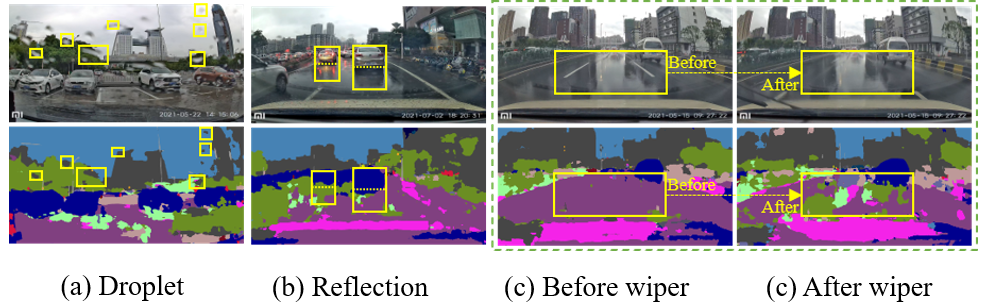
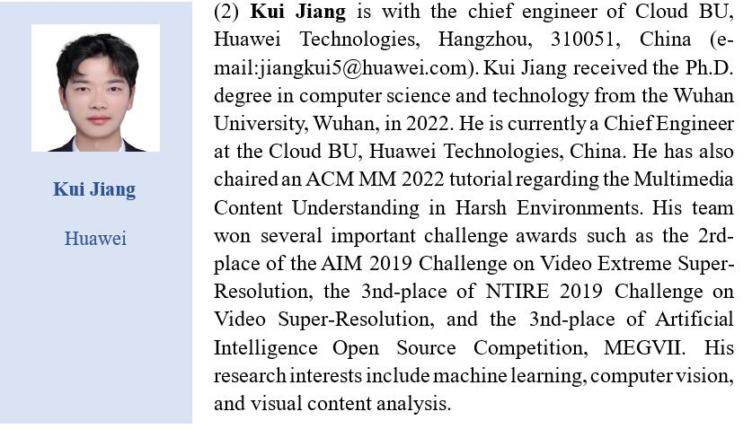
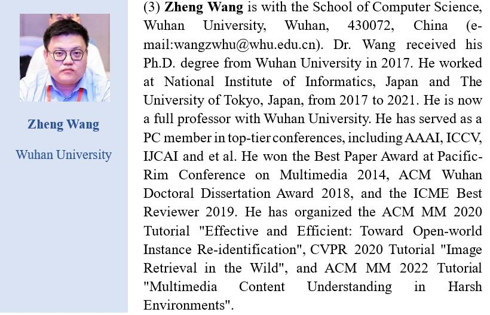
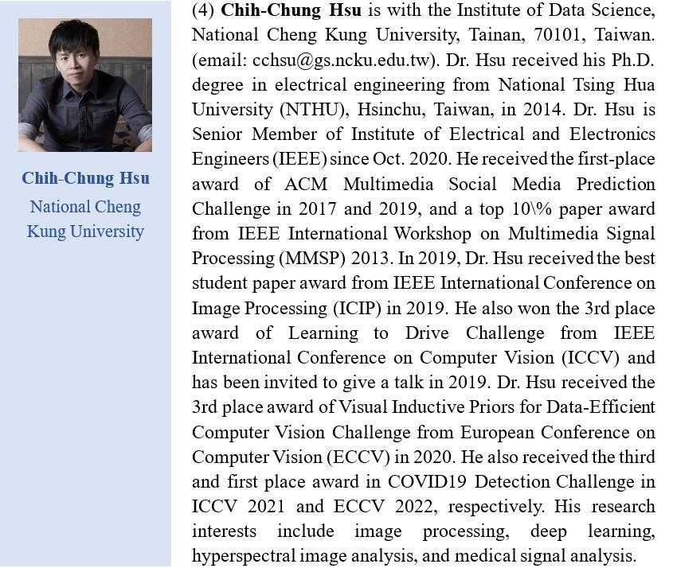
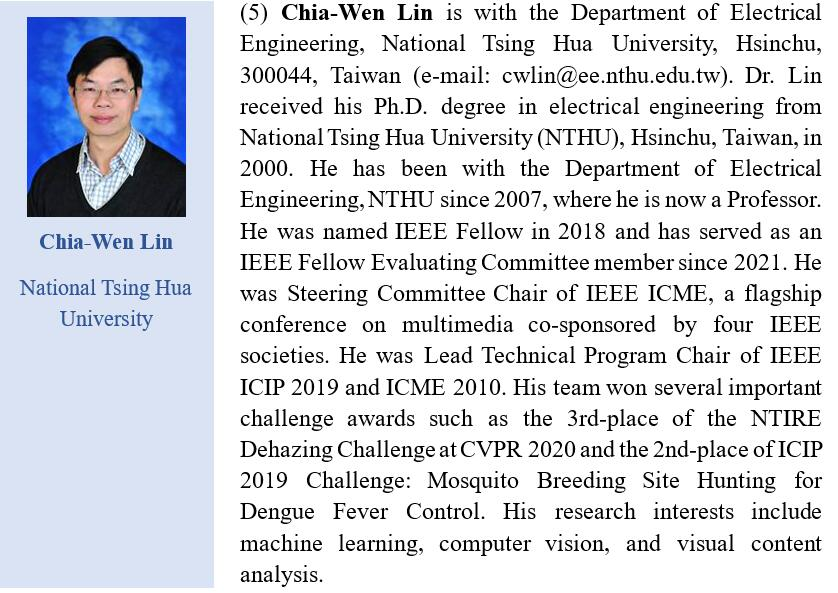

Visual Task Challenges under Real Rain Scene
Background
Early researches on robust understanding of rain scenes focus on pairwise supervised synthetic rain scenarios, which is of special significance for many real-world applications. In practice, rain is more than simply the synthetic rain's rain streaks, and even those in a driving environment can be not easy to see. Rain intensity, occlusion, blur, droplet, reflection, wiper, and their blending effects are the degradation factors on rainy days in outdoor applications such as autonomous driving and surveillance systems. Existing vision techniques, in particular the single degradation factor, perform better under unreal synthetic conditions but fall short when used on real rain scene images where the background contents suffer from a variety of complex degradations. Consequently, as a result of these negative degradation effects, multimedia applications like image understanding, object detection, and identification perform much worse. It is vital to make attempts to seek the optimized solution and meet the real demands of people's livelihood.
Challenge

Shading Effect of Droplet：Droplet, the most common phenomenon on rainy days, will prevent light from passing straight through the object, and when it falls on the windshield, the content distortion caused by the reflectance and refraction becomes more pronounced. In Fig. (a), areas covered with rain droplet has significant misidentification, the green "vegetation'' is identified as the grey "building'', while the blue "sky'' is misidentified as the grey "building''.
Road Reflection：The rain droplets accumulated on the road commonly form a mirror reflection effect, confusing the segmentation model with the fake and indistinguishable objective boundary. As shown in Fig. (b), the shadow of cars is incorrectly identified.
Blurring by Windshield Wiper：The wiper eliminates the visual occlusion caused by the rain accumulation. However, for the real rainy days, the wiper operation could evidently promote the visual clarity of human observed views, but the unexpected change of scene contents is unfriendly to the segmentation model for the real-time application. As is shown in the yellow box in Fig. (c), the result is not consistent with the human's view.
Timeline
|
Data |
Event |
|
January 1, 2023 |
Release |
|
March 15, 2023 |
Paper & Model Submission Deadline |
|
March 31, 2023 |
Notification |
|
April 6, 2023 |
Camera-Ready Regular Paper Submission |
Please refer to the submission deadline for details.
Rainy WCity Datasets
Introduce
The Rainy WCity dataset consists of 600 rainy pictures. We observe that there are three typical degradation factors in these pictures that affect the quality of the picture: raindrop, wiper, and reflection. Here we split the Rainy WCity with 500 for image training and 100 for testing, and each segment divided into three main categories according to the three degradation factors. The size of each picture is 1920×1080. And there is no pixel-by-pixel paired reference images, since our dataset is taken in the real rain scene.
Rainy WCity covers various rain patterns and their bring-in negative visual effects, covering raindrop, wiper, reflection, refraction, shadow, windshield-blurring, etc. Our dataset distinguishes others by featuring the following elements: 1) Diverse Rain Patterns: including light, moderate, and heavy rain scenarios; 2) Diverse degradation factors: besides the typical rain occlusion, our dataset considers numerous adverse effects of degradation, commonly occurred on rainy days but overlooked in other real rainy datasets, e.g., the raindrop interference, windshield-blurring, and road reflection.
Topic
This challenge aims at addressing the visibility problem of vision tasks under adverse weather scenarios (e.g.,fog, rain, low-illumination) for sharing ideas and discussions on current trends, issues, and future directions. The topics include but are not limited to:
l Semantic Segmentation under Real Rain Scene
l Object Detection under Real Rain Scene
Download
Baidu Netdisk：Rainy WCity
Google Drive：Rainy WCity
Ask for Permission
Track 1: Semantic Segmentation under Real Rain Scene
Track 2: Object Detection under Real Rain Scene
If you would like to use our dataset, please download the release file. The download of Rainy WCity DATABASE RELEASE AGREEMENT is here：
Rainy WCity DATABASE RELEASE AGREEMENT
Evaluation Protocol
Semantic Segmentation：mIoU
Object Detection：IoU、mAP
Deraining：NIQE、SSEQ、PIQE、Perceptual Index
l In the semantic segmentation field, metrics such as Mean Intersection over Union (mIoU) are commonly used to evalute segmentation effects.
l In the object detection field, conventional metrics like Mean Average Precision (mAP), Intersection over Union (IoU), etc. are used to measure detection effectiveness.
l (Optionally) Since our rain scene belongs to the field of image enhancement, other non-referenced subjective evaluation metrics are also available: e.g. Spatial-Spectral Entropy-based Quality (SSEQ), Natural Image Quality Evaluator (NIQE), Perception-based Image Quality Evaluator (PIQE) and Perception Index (PI).
Paper Submission
l Length: Papers must be no longer than 6 pages, including all text, figures, and references.
l Format: Grand Challenge papers have the same format as regular papers. See the example paper under the General Information section below. However, their review is single blind.
l Submission: Submit the written component via CMT under the appropriate Grand Challenge track. Submit the data component, if any, directly to the Grand Challenge organizers as specified on the appropriate Grand Challenge site.
l Review: Submissions of both written and data components will be reviewed directly by the Grand Challenge organizers. Accepted submissions (written component only) will be included in the USB Proceedings and the authors will be given the opportunity to present their work at ICME. “Winning” submissions will be announced by the Grand Challenge organizers at the conference.
l Submissions may be accompanied by up to 20 MB of supplemental material following the same guidelines as regular and special session papers.
l Presentation guarantee: As with accepted Regular and Special Session papers, accepted Grand Challenge papers must be registered by the author deadline and presented at the conference; otherwise they will not be included in IEEE Xplore.
l A
Grand Challenge paper is covered by a full-conference registration only.
Organizers




Communication & QA